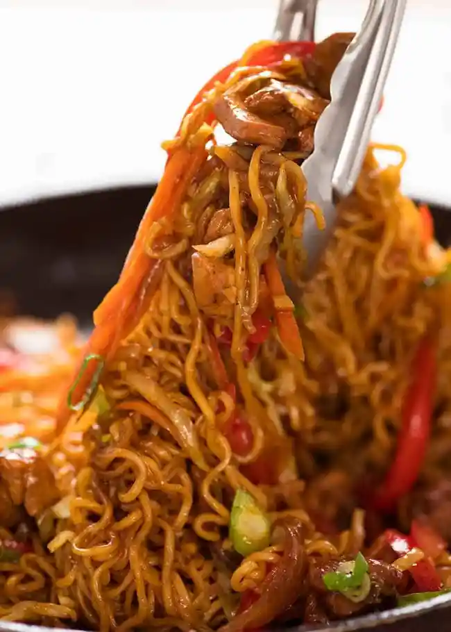

Enhanced instant noodles

Chicken ramen noodles
Back to home
A fresh twist on a college student classic, instant noodles. Try this recipe if repeatedly eating ramen noodles is getting stale.
Ingredients
- 2 packets ramen or other instant noodles, discard seasoning
- 1 tbsp oil
- 2 garlic sloves, minced
- 1/2 onion, sliced
- 200g chicken thighs, cut into bite-sized pieces
- 1 carrot, cut into matchsticks
- 1 small red bell pepper, sliced
- 2 cups cabbage, finely sliced
Sauce
- 1 tbsp dark soy sauce
- 1 tbsp oyster sauce
- 2 tbsp hoisin sauce
- 1 tbsp Mirin
Instructions
- Mix sauce.
- Heat oil in a large skillet over high heat. Add onion and garlic, cook for 1 1/2 minutes until starting to go golden.
- Add chicken and cook just until the outside mostly changes from pink to white.
- Add Sauce and cook for 1 minute until chicken is quite caramelised.
- Add carrot and capsicum, cook for 1 minute.
- Push chicken and veg to the side to make enough space for the noodles. Add water, place noodles in water.
- When the water starts simmering on the edges, leave noodles for 45 seconds then turn.
- Leave for 30 seconds, then untangle the noodles, then toss through the chicken and veg.
- Add cabbage, toss for 1 minute until sauce reduces to coat the noodles and the noodles are cooked
- Serve immediately, garnished with green onions.